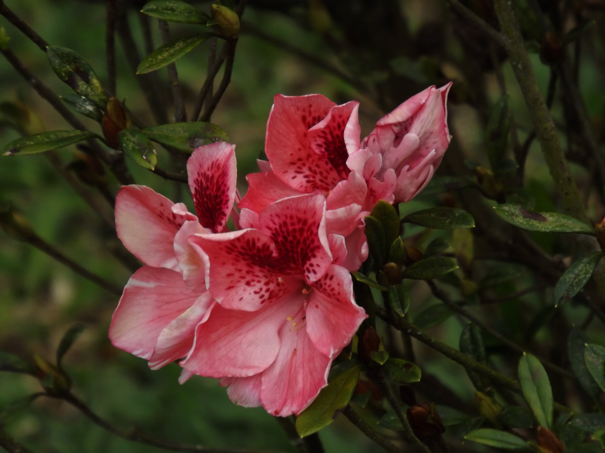

Meus sentimentos
Antes de começarmos, quero que você imagine algo. Imagine viver em um mundo onde nenhuma lembrança pudesse ser registrada. Não existiriam fotografias de infância, retratos de família, imagens de viagens ou registros de momentos importantes. Tudo dependeria apenas da memória.
Parece estranho, não é? Mas durante muito tempo foi exatamente assim. A humanidade observava o mundo, admirava paisagens, rostos e acontecimentos, mas ainda não havia encontrado uma forma de capturar a realidade como ela era.
“Uma fotografia é um fragmento de tempo que nunca mais se repetirá.”
Quando a luz começou a desenhar imagens
Muito antes da fotografia existir, estudiosos já conheciam um fenômeno chamado câmara escura. Ela funcionava como uma sala ou caixa fechada, com apenas um pequeno orifício por onde a luz entrava. Ao passar por esse pequeno ponto, a luz projetava uma imagem invertida do lado de fora.
Era quase mágico. Pela primeira vez, as pessoas conseguiam ver o mundo sendo reproduzido pela própria luz. Artistas usavam esse recurso para auxiliar em desenhos e pinturas, mas ainda existia um grande problema: a imagem aparecia, mas não podia ser guardada.
Ela sumia. E foi justamente esse mistério que despertou a curiosidade de muitos inventores: como fazer a luz registrar permanentemente aquilo que ela mostrava?
O homem que conseguiu parar o tempo
No início do século XIX, Joseph Nicéphore Niépce começou a realizar diversos experimentos para tentar fixar imagens produzidas pela luz. Depois de muitas tentativas, ele conseguiu criar a primeira fotografia permanente conhecida da história.
A imagem recebeu o nome de “Vista da Janela em Le Gras” e foi feita em 1826. Para os olhos de hoje, ela pode parecer simples e pouco nítida. Mas naquele momento ela representava uma revolução: pela primeira vez, um pedaço da realidade havia sido preservado.
O mais curioso é que a imagem precisou de horas de exposição à luz para ser registrada. Imagine deixar uma câmera parada durante quase um dia inteiro para conseguir uma única fotografia. Mesmo assim, aquele resultado mudou para sempre a forma como o ser humano se relaciona com a memória.
A fotografia nasceu da paciência.
Antes de ser instantânea, ela exigia espera, silêncio, luz e tempo.
Daguerre e a popularização da fotografia
Depois de Niépce, outro nome se tornou essencial nessa história: Louis Daguerre. Ele continuou os estudos sobre a fixação da imagem e desenvolveu o daguerreótipo, um processo apresentado oficialmente em 1839.
O daguerreótipo impressionou o mundo por sua riqueza de detalhes. Pela primeira vez, era possível fazer retratos com uma precisão muito maior do que pinturas ou desenhos. Pessoas viajavam longas distâncias para ter sua imagem registrada.
Naquela época, ter um retrato era algo especial. Antes, apenas pessoas ricas conseguiam encomendar pinturas. Com a fotografia, o registro da própria imagem começou a se tornar mais acessível e mais próximo da vida comum.
A fotografia chega ao Brasil
Talvez você imagine que a fotografia demorou para chegar ao Brasil, mas não foi bem assim. Pouco tempo depois da divulgação do daguerreótipo, a técnica já aparecia em território brasileiro.
Dom Pedro II teve um papel importante nesse processo. Ele foi um grande admirador da fotografia, colecionou imagens, apoiou fotógrafos e incentivou o registro visual do país.
Graças a esse interesse, muitas imagens históricas do Brasil foram preservadas. A fotografia passou a registrar cidades, pessoas, costumes e transformações sociais, tornando-se uma forma importante de memória nacional.
Quando fotografar virou algo para todos
Durante muito tempo, fotografar ainda era caro, técnico e complicado. Mas isso começou a mudar no final do século XIX, principalmente com a popularização das câmeras Kodak.
A ideia era simples: a pessoa apertava o botão e a empresa cuidava do restante. Isso transformou a fotografia. Ela deixou de pertencer apenas aos especialistas e passou a entrar na vida das famílias.
A partir daí, aniversários, viagens, casamentos, encontros e momentos simples começaram a ser registrados com mais frequência. A fotografia deixou de ser apenas ciência ou técnica. Ela se tornou afeto.
Fotografar é escolher o que merece permanecer.
Cada clique é uma forma de dizer: “isso importa para mim”.

A chegada da fotografia colorida
Por muitos anos, as fotografias eram em preto e branco. Isso não significa que o mundo não fosse visto em cores, mas sim que a tecnologia ainda não conseguia registrar as tonalidades reais da vida.
Com o tempo, pesquisadores desenvolveram processos capazes de capturar cores. A fotografia colorida trouxe outra dimensão para as imagens: atmosferas, emoções, roupas, cenários e detalhes passaram a ser percebidos de uma forma mais próxima da realidade.
O mundo fotografado ganhou mais intensidade. A memória passou a carregar não apenas formas e contrastes, mas também tons, luzes e sensações.
A revolução digital
Durante mais de um século, fotografar significava usar filmes fotográficos. Era preciso revelar negativos, esperar o processo químico e só depois descobrir se a imagem havia ficado boa.
Com o avanço da tecnologia, surgiu a fotografia digital. As imagens passaram a ser armazenadas eletronicamente, sem a necessidade de filmes. Isso mudou completamente a relação das pessoas com a câmera.
Agora era possível ver o resultado imediatamente, apagar, refazer, editar e compartilhar. A fotografia ficou mais rápida, mais prática e muito mais presente no cotidiano.
A fotografia no bolso
Com os celulares, a fotografia passou por mais uma transformação. A câmera deixou de ser um objeto separado e passou a acompanhar as pessoas todos os dias, dentro do bolso.
Hoje, qualquer pessoa pode registrar um momento em segundos. Uma paisagem, um encontro, um detalhe na rua, uma comida bonita, um sorriso inesperado. Tudo pode virar imagem.
Isso fez com que a fotografia se tornasse uma das linguagens mais usadas no mundo. Ela está nas redes sociais, nos jornais, nos documentos, na arte, na publicidade, na moda e nas memórias pessoais.
Mais do que imagens
No fim, a fotografia nunca foi apenas sobre câmeras. Ela é sobre memória, emoção e presença. Uma fotografia consegue mostrar pessoas que já não estão mais aqui, lugares que mudaram e momentos que jamais voltarão a acontecer.
Quando olhamos para uma fotografia, não vemos apenas uma imagem. Vemos um instante que resistiu ao tempo. Vemos uma história congelada pela luz. Vemos uma lembrança que encontrou uma forma de continuar existindo.
E talvez seja por isso que a fotografia continue encantando. Porque ela nos lembra que o tempo passa, mas algumas coisas podem permanecer.